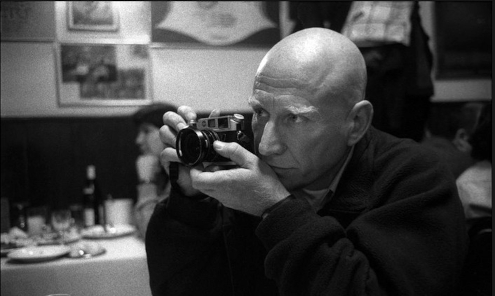
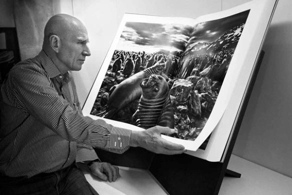
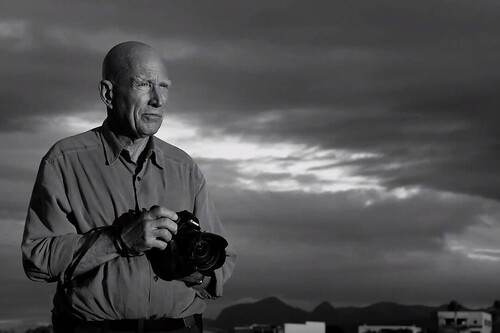

THE SILENT DRAMA OF PHOTOGRAPHY
Sebastião Salgado is a renowned Brazilian photographer known for his powerful black-and-white images
that capture social issues, human suffering, and the beauty of nature. Born on February 8, 1944, in Aimorés,
Brazil, Salgado initially pursued a career in economics before discovering his passion for photography.
Salgado's photography often focuses on themes such as labor, migration, poverty, and environmental
degradation. He has traveled extensively to document these subjects, working in some of the most remote and
challenging environments around the world. His work is characterized by its meticulous composition, dramatic lighting,
and deep emotional resonance.


One of Salgado's most famous projects is "Workers," a series of photographs that depict the
harsh conditions faced by laborers in various industries around the world. Another notable project
is "Genesis," which explores the pristine beauty of untouched landscapes and indigenous cultures.
Throughout his career, Salgado has received numerous awards and honors for his photography, including
the W. Eugene Smith Memorial Fund Grant, the Hasselblad Foundation International Award in Photography, and the
International Center of Photography Infinity Award.
In addition to his photography, Salgado is also a co-founder of the Instituto Terra, a nonprofit
organization dedicated to environmental conservation and reforestation in Brazil.
Overall, Sebastião Salgado's work has had a profound impact on the world of photography, inspiring
audiences to confront social injustices and appreciate the beauty of the natural world. His images serve
as powerful reminders of the human condition and the interconnectedness of all life on Earth.
